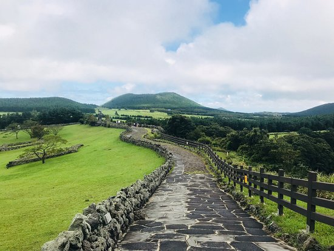

소개
산굼부리는 제주특별자치도의 천연기념물 제263호로 지정된 분화구이다. '굼부리'는 화산체의 분화구를 일컫는 제주말이다. 360여개의 한라산 기생화산 중의 하나이지만, 다른 기생화산들과는 달리 커다란 분화구를 가지고 있는데, 산체에 비해서 화구의 크기가 비교적 큰 편이라는 점에서 특이하다.
산굼부리는 제주특별자치도의 천연기념물 제263호로 지정된 분화구이다. '굼부리'는 화산체의 분화구를 일컫는 제주말이다. 360여개의 한라산 기생화산 중의 하나이지만, 다른 기생화산들과는 달리 커다란 분화구를 가지고 있는데, 산체에 비해서 화구의 크기가 비교적 큰 편이라는 점에서 특이하다.